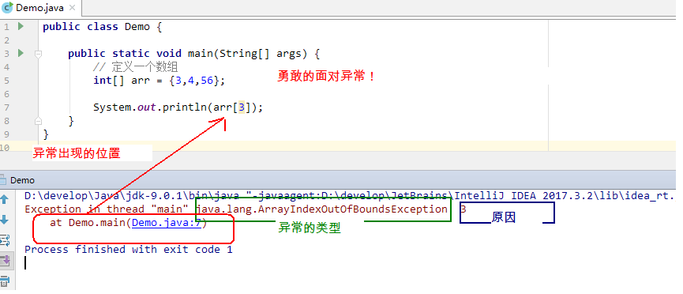

day05 【异常、线程】主要内容教学目标第一章 异常1.1 异常概念1.2 异常体系1.3 异常分类1.4 异常的产生过程解析第二章 异常的处理2.1 抛出异常throw2.2 Objects非空判断2.3 声明异常throws2.4 捕获异常try…catch2.4 finally 代码块2.5 异常注意事项第三章 自定义异常3.1 概述3.2 自定义异常的练习第四章 多线程4.1 并发与并行4.2 线程与进程4.3 创建线程类
day05 【异常、线程】
主要内容
- 异常、线程
教学目标
能够辨别程序中异常和错误的区别
说出异常的分类
说出虚拟机处理异常的方式
列举出常见的三个运行期异常
能够使用try...catch关键字处理异常
能够使用throws关键字处理异常
能够自定义异常类
能够处理自定义异常类
说出进程的概念
说出线程的概念
能够理解并发与并行的区别
能够开启新线程
第一章 异常
1.1 异常概念
异常，就是不正常的意思。在生活中:医生说,你的身体某个部位有异常,该部位和正常相比有点不同,该部位的功能将受影响.在程序中的意思就是：
- 异常 ：指的是程序在执行过程中，出现的非正常的情况，最终会导致JVM的非正常停止。
在Java等面向对象的编程语言中，异常本身是一个类，产生异常就是创建异常对象并抛出了一个异常对象。Java处理异常的方式是中断处理。
异常指的并不是语法错误,语法错了,编译不通过,不会产生字节码文件,根本不能运行.
1.2 异常体系
异常机制其实是帮助我们找到程序中的问题，异常的根类是java.lang.Throwable，其下有两个子类：java.lang.Error与java.lang.Exception，平常所说的异常指java.lang.Exception。

Throwable体系：
- Error:严重错误Error，无法通过处理的错误，只能事先避免，好比绝症。
- Exception:表示异常，异常产生后程序员可以通过代码的方式纠正，使程序继续运行，是必须要处理的。好比感冒、阑尾炎。
Throwable中的常用方法：
public void printStackTrace():打印异常的详细信息。包含了异常的类型,异常的原因,还包括异常出现的位置,在开发和调试阶段,都得使用printStackTrace。
public String getMessage():获取发生异常的原因。提示给用户的时候,就提示错误原因。
public String toString():获取异常的类型和异常描述信息(不用)。
出现异常,不要紧张,把异常的简单类名,拷贝到API中去查。

1.3 异常分类
我们平常说的异常就是指Exception，因为这类异常一旦出现，我们就要对代码进行更正，修复程序。
异常(Exception)的分类:根据在编译时期还是运行时期去检查异常?
- 编译时期异常:checked异常。在编译时期,就会检查,如果没有处理异常,则编译失败。(如日期格式化异常)
- 运行时期异常:runtime异常。在运行时期,检查异常.在编译时期,运行异常不会编译器检测(不报错)。(如数学异常)

1.4 异常的产生过程解析
先运行下面的程序，程序会产生一个数组索引越界异常ArrayIndexOfBoundsException。我们通过图解来解析下异常产生的过程。
工具类
xxxxxxxxxxpublic class ArrayTools { // 对给定的数组通过给定的角标获取元素。 public static int getElement(int[] arr, int index) { int element = arr[index]; return element; }}测试类
xxxxxxxxxxpublic class ExceptionDemo { public static void main(String[] args) { int[] arr = { 34, 12, 67 }; intnum = ArrayTools.getElement(arr, 4) System.out.println("num=" + num); System.out.println("over"); }}上述程序执行过程图解：

第二章 异常的处理
Java异常处理的五个关键字：try、catch、finally、throw、throws
2.1 抛出异常throw
在编写程序时，我们必须要考虑程序出现问题的情况。比如，在定义方法时，方法需要接受参数。那么，当调用方法使用接受到的参数时，首先需要先对参数数据进行合法的判断，数据若不合法，就应该告诉调用者，传递合法的数据进来。这时需要使用抛出异常的方式来告诉调用者。
在java中，提供了一个throw关键字，它用来抛出一个指定的异常对象。那么，抛出一个异常具体如何操作呢？
创建一个异常对象。封装一些提示信息(信息可以自己编写)。
需要将这个异常对象告知给调用者。怎么告知呢？怎么将这个异常对象传递到调用者处呢？通过关键字throw就可以完成。throw 异常对象。
throw用在方法内，用来抛出一个异常对象，将这个异常对象传递到调用者处，并结束当前方法的执行。
使用格式：
xxxxxxxxxxthrow new 异常类名(参数);
例如：
xthrow new NullPointerException("要访问的arr数组不存在");throw new ArrayIndexOutOfBoundsException("该索引在数组中不存在，已超出范围");学习完抛出异常的格式后，我们通过下面程序演示下throw的使用。
xxxxxxxxxxpublic class ThrowDemo { public static void main(String[] args) { //创建一个数组 int[] arr = {2,4,52,2}; //根据索引找对应的元素 int index = 4; int element = getElement(arr, index); System.out.println(element); System.out.println("over"); } /* * 根据 索引找到数组中对应的元素 */ public static int getElement(int[] arr,int index){ //判断 索引是否越界 if(index<0 || index>arr.length-1){ /* 判断条件如果满足，当执行完throw抛出异常对象后，方法已经无法继续运算。 这时就会结束当前方法的执行，并将异常告知给调用者。这时就需要通过异常来解决。 */ throw new ArrayIndexOutOfBoundsException("哥们，角标越界了~~~"); } int element = arr[index]; return element; }}注意：如果产生了问题，我们就会throw将问题描述类即异常进行抛出，也就是将问题返回给该方法的调用者。
那么对于调用者来说，该怎么处理呢？一种是进行捕获处理，另一种就是继续讲问题声明出去，使用throws声明处理。
2.2 Objects非空判断
还记得我们学习过一个类Objects吗，曾经提到过它由一些静态的实用方法组成，这些方法是null-save（空指针安全的）或null-tolerant（容忍空指针的），那么在它的源码中，对对象为null的值进行了抛出异常操作。
public static <T> T requireNonNull(T obj):查看指定引用对象不是null。
查看源码发现这里对为null的进行了抛出异常操作：
xxxxxxxxxxpublic static <T> T requireNonNull(T obj) { if (obj == null) throw new NullPointerException(); return obj;}2.3 声明异常throws
声明异常：将问题标识出来，报告给调用者。如果方法内通过throw抛出了编译时异常，而没有捕获处理（稍后讲解该方式），那么必须通过throws进行声明，让调用者去处理。
关键字throws运用于方法声明之上,用于表示当前方法不处理异常,而是提醒该方法的调用者来处理异常(抛出异常).
声明异常格式：
xxxxxxxxxx修饰符 返回值类型 方法名(参数) throws 异常类名1,异常类名2…{ }
声明异常的代码演示：
xxxxxxxxxxpublic class ThrowsDemo { public static void main(String[] args) throws FileNotFoundException { read("a.txt"); } // 如果定义功能时有问题发生需要报告给调用者。可以通过在方法上使用throws关键字进行声明 public static void read(String path) throws FileNotFoundException { if (!path.equals("a.txt")) {//如果不是 a.txt这个文件 // 我假设 如果不是 a.txt 认为 该文件不存在 是一个错误 也就是异常 throw throw new FileNotFoundException("文件不存在"); } }}throws用于进行异常类的声明，若该方法可能有多种异常情况产生，那么在throws后面可以写多个异常类，用逗号隔开。
xxxxxxxxxxpublic class ThrowsDemo2 { public static void main(String[] args) throws IOException { read("a.txt"); } public static void read(String path)throws FileNotFoundException, IOException { if (!path.equals("a.txt")) {//如果不是 a.txt这个文件 // 我假设 如果不是 a.txt 认为 该文件不存在 是一个错误 也就是异常 throw throw new FileNotFoundException("文件不存在"); } if (!path.equals("b.txt")) { throw new IOException(); } }}2.4 捕获异常try…catch
如果异常出现的话,会立刻终止程序,所以我们得处理异常:
- 该方法不处理,而是声明抛出,由该方法的调用者来处理(throws)。
- 在方法中使用try-catch的语句块来处理异常。
try-catch的方式就是捕获异常。
- 捕获异常：Java中对异常有针对性的语句进行捕获，可以对出现的异常进行指定方式的处理。
捕获异常语法如下：
xxxxxxxxxxtry{ 编写可能会出现异常的代码}catch(异常类型 e){ 处理异常的代码 //记录日志/打印异常信息/继续抛出异常}try：该代码块中编写可能产生异常的代码。
catch：用来进行某种异常的捕获，实现对捕获到的异常进行处理。
注意:try和catch都不能单独使用,必须连用。
演示如下：
xxxxxxxxxxpublic class TryCatchDemo { public static void main(String[] args) { try {// 当产生异常时，必须有处理方式。要么捕获，要么声明。 read("b.txt"); } catch (FileNotFoundException e) {// 括号中需要定义什么呢？ //try中抛出的是什么异常，在括号中就定义什么异常类型 System.out.println(e); } System.out.println("over"); } /* * * 我们 当前的这个方法中 有异常 有编译期异常 */ public static void read(String path) throws FileNotFoundException { if (!path.equals("a.txt")) {//如果不是 a.txt这个文件 // 我假设 如果不是 a.txt 认为 该文件不存在 是一个错误 也就是异常 throw throw new FileNotFoundException("文件不存在"); } }}如何获取异常信息：
Throwable类中定义了一些查看方法:
public String getMessage():获取异常的描述信息,原因(提示给用户的时候,就提示错误原因。
public String toString():获取异常的类型和异常描述信息(不用)。public void printStackTrace():打印异常的跟踪栈信息并输出到控制台。
包含了异常的类型,异常的原因,还包括异常出现的位置,在开发和调试阶段,都得使用printStackTrace。
2.4 finally 代码块
finally：有一些特定的代码无论异常是否发生，都需要执行。另外，因为异常会引发程序跳转，导致有些语句执行不到。而finally就是解决这个问题的，在finally代码块中存放的代码都是一定会被执行的。
什么时候的代码必须最终执行？
当我们在try语句块中打开了一些物理资源(磁盘文件/网络连接/数据库连接等),我们都得在使用完之后,最终关闭打开的资源。
finally的语法:
try...catch....finally:自身需要处理异常,最终还得关闭资源。
注意:finally不能单独使用。
比如在我们之后学习的IO流中，当打开了一个关联文件的资源，最后程序不管结果如何，都需要把这个资源关闭掉。
finally代码参考如下：
xxxxxxxxxxpublic class TryCatchDemo4 { public static void main(String[] args) { try { read("a.txt"); } catch (FileNotFoundException e) { //抓取到的是编译期异常 抛出去的是运行期 throw new RuntimeException(e); } finally { System.out.println("不管程序怎样，这里都将会被执行。"); } System.out.println("over"); } /* * * 我们 当前的这个方法中 有异常 有编译期异常 */ public static void read(String path) throws FileNotFoundException { if (!path.equals("a.txt")) {//如果不是 a.txt这个文件 // 我假设 如果不是 a.txt 认为 该文件不存在 是一个错误 也就是异常 throw throw new FileNotFoundException("文件不存在"); } }}当只有在try或者catch中调用退出JVM的相关方法,此时finally才不会执行,否则finally永远会执行。

2.5 异常注意事项
多个异常使用捕获又该如何处理呢？
- 多个异常分别处理。
- 多个异常一次捕获，多次处理。
- 多个异常一次捕获一次处理。
一般我们是使用一次捕获多次处理方式，格式如下：
xxxxxxxxxxtry{编写可能会出现异常的代码}catch(异常类型A e){ 当try中出现A类型异常,就用该catch来捕获.处理异常的代码//记录日志/打印异常信息/继续抛出异常}catch(异常类型B e){ 当try中出现B类型异常,就用该catch来捕获.处理异常的代码//记录日志/打印异常信息/继续抛出异常}注意:这种异常处理方式，要求多个catch中的异常不能相同，并且若catch中的多个异常之间有子父类异常的关系，那么子类异常要求在上面的catch处理，父类异常在下面的catch处理。
运行时异常被抛出可以不处理。即不捕获也不声明抛出。
如果finally有return语句,永远返回finally中的结果,避免该情况.
如果父类抛出了多个异常,子类重写父类方法时,抛出和父类相同的异常或者是父类异常的子类或者不抛出异常。
父类方法没有抛出异常，子类重写父类该方法时也不可抛出异常。此时子类产生该异常，只能捕获处理，不能声明抛出
第三章 自定义异常
3.1 概述
为什么需要自定义异常类:
我们说了Java中不同的异常类,分别表示着某一种具体的异常情况,那么在开发中总是有些异常情况是SUN没有定义好的,此时我们根据自己业务的异常情况来定义异常类。例如年龄负数问题,考试成绩负数问题等等。
在上述代码中，发现这些异常都是JDK内部定义好的，但是实际开发中也会出现很多异常,这些异常很可能在JDK中没有定义过,例如年龄负数问题,考试成绩负数问题.那么能不能自己定义异常呢？
什么是自定义异常类:
在开发中根据自己业务的异常情况来定义异常类.
自定义一个业务逻辑异常: RegisterException。一个注册异常类。
异常类如何定义:
- 自定义一个编译期异常: 自定义类 并继承于
java.lang.Exception。 - 自定义一个运行时期的异常类:自定义类 并继承于
java.lang.RuntimeException。
3.2 自定义异常的练习
要求：我们模拟注册操作，如果用户名已存在，则抛出异常并提示：亲，该用户名已经被注册。
首先定义一个登陆异常类RegisterException：
xxxxxxxxxx// 业务逻辑异常public class RegisterException extends Exception { /** * 空参构造 */ public RegisterException() { } /** * * @param message 表示异常提示 */ public RegisterException(String message) { super(message); }}模拟登陆操作，使用数组模拟数据库中存储的数据，并提供当前注册账号是否存在方法用于判断。
xxxxxxxxxxpublic class Demo { // 模拟数据库中已存在账号 private static String[] names = {"bill","hill","jill"}; public static void main(String[] args) { //调用方法 try{ // 可能出现异常的代码 checkUsername("nill"); System.out.println("注册成功");//如果没有异常就是注册成功 }catch(RegisterException e){ //处理异常 e.printStackTrace(); } } //判断当前注册账号是否存在 //因为是编译期异常，又想调用者去处理 所以声明该异常 public static boolean checkUsername(String uname) throws LoginException{ for (String name : names) { if(name.equals(uname)){//如果名字在这里面 就抛出登陆异常 throw new RegisterException("亲"+name+"已经被注册了！"); } } return true; }}第四章 多线程
我们在之前，学习的程序在没有跳转语句的前提下，都是由上至下依次执行，那现在想要设计一个程序，边打游戏边听歌，怎么设计？
要解决上述问题,咱们得使用多进程或者多线程来解决.
4.1 并发与并行
- 并发：指两个或多个事件在同一个时间段内发生。
- 并行：指两个或多个事件在同一时刻发生（同时发生）。

在操作系统中，安装了多个程序，并发指的是在一段时间内宏观上有多个程序同时运行，这在单 CPU 系统中，每一时刻只能有一道程序执行，即微观上这些程序是分时的交替运行，只不过是给人的感觉是同时运行，那是因为分时交替运行的时间是非常短的。
而在多个 CPU 系统中，则这些可以并发执行的程序便可以分配到多个处理器上（CPU），实现多任务并行执行，即利用每个处理器来处理一个可以并发执行的程序，这样多个程序便可以同时执行。目前电脑市场上说的多核 CPU，便是多核处理器，核 越多，并行处理的程序越多，能大大的提高电脑运行的效率。
注意：单核处理器的计算机肯定是不能并行的处理多个任务的，只能是多个任务在单个CPU上并发运行。同理,线程也是一样的，从宏观角度上理解线程是并行运行的，但是从微观角度上分析却是串行运行的，即一个线程一个线程的去运行，当系统只有一个CPU时，线程会以某种顺序执行多个线程，我们把这种情况称之为线程调度。
4.2 线程与进程
进程：是指一个内存中运行的应用程序，每个进程都有一个独立的内存空间，一个应用程序可以同时运行多个进程；进程也是程序的一次执行过程，是系统运行程序的基本单位；系统运行一个程序即是一个进程从创建、运行到消亡的过程。
线程：线程是进程中的一个执行单元，负责当前进程中程序的执行，一个进程中至少有一个线程。一个进程中是可以有多个线程的，这个应用程序也可以称之为多线程程序。
简而言之：一个程序运行后至少有一个进程，一个进程中可以包含多个线程
我们可以再电脑底部任务栏，右键----->打开任务管理器,可以查看当前任务的进程：
进程

线程
线程调度:
分时调度
所有线程轮流使用 CPU 的使用权，平均分配每个线程占用 CPU 的时间。
抢占式调度
优先让优先级高的线程使用 CPU，如果线程的优先级相同，那么会随机选择一个(线程随机性)，Java使用的为抢占式调度。
- 设置线程的优先级

抢占式调度详解
大部分操作系统都支持多进程并发运行，现在的操作系统几乎都支持同时运行多个程序。比如：现在我们上课一边使用编辑器，一边使用录屏软件，同时还开着画图板，dos窗口等软件。此时，这些程序是在同时运行，”感觉这些软件好像在同一时刻运行着“。
实际上，CPU(中央处理器)使用抢占式调度模式在多个线程间进行着高速的切换。对于CPU的一个核而言，某个时刻，只能执行一个线程，而 CPU的在多个线程间切换速度相对我们的感觉要快，看上去就是在同一时刻运行。 其实，多线程程序并不能提高程序的运行速度，但能够提高程序运行效率，让CPU的使用率更高。

4.3 创建线程类
Java使用java.lang.Thread类代表线程，所有的线程对象都必须是Thread类或其子类的实例。每个线程的作用是完成一定的任务，实际上就是执行一段程序流即一段顺序执行的代码。Java使用线程执行体来代表这段程序流。Java中通过继承Thread类来创建并启动多线程的步骤如下：
- 定义Thread类的子类，并重写该类的run()方法，该run()方法的方法体就代表了线程需要完成的任务,因此把run()方法称为线程执行体。
- 创建Thread子类的实例，即创建了线程对象
- 调用线程对象的start()方法来启动该线程
代码如下：
测试类：
xxxxxxxxxxpublic class Demo01 { public static void main(String[] args) { //创建自定义线程对象 MyThread mt = new MyThread("新的线程！"); //开启新线程 mt.start(); //在主方法中执行for循环 for (int i = 0; i < 10; i++) { System.out.println("main线程！"+i); } }}自定义线程类：
public class MyThread extends Thread { //定义指定线程名称的构造方法 public MyThread(String name) { //调用父类的String参数的构造方法，指定线程的名称 super(name); } /** * 重写run方法，完成该线程执行的逻辑 */ public void run() { for (int i = 0; i < 10; i++) { System.out.println(getName()+"：正在执行！"+i); } }}